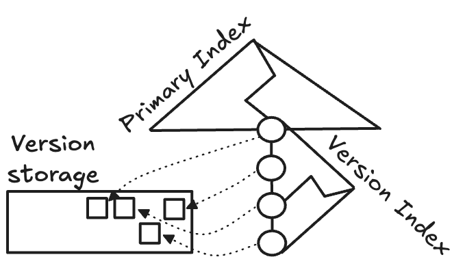

원본 논문
- 이 글은 DIVA: Making MVCC Systems HTAP-Friendly (SIGMOD’22) 논문을 읽고 정리한 글입니다.
- 별도의 명시가 없으면, 본 논문에서 그림을 가져왔습니다.
1.0. Introduction to DIVA
Arbitrary section
- 내용 정리를 위해 임의로 구분지은 section 입니당. 논문에는 이런 section 은 없음
1.0.1. OLTP MVCC
- MVCC 는 데이터의 여러 version 을 관리해 “특정 시점에 대한 데이터의 일관성” (point-in-time consistency) 을 제공함과 동시에 operation conflict 를 막는 방법이다.
- 하지만 당연히 이 여러 version 들을 저장해야 하는 문제가 생겼고, 기존에는 이 문제를 효과적으로 해결하는 방법을 OLTP 의 관점에서 해결해 왔다.
1.0.2. Recovery Concerns
- MVCC 와 recovery 는 상반된 성격을 가진다. 왜냐면 MVCC 는 version 전부를 필요로 하고, recovery 는 가장 최신의 version 만 있으면 되기 때문.
- 기존의 design 에서는 이것을 해결하기 위해 version 들을 하나의 공간에 다 집어넣고 (unified version storage), 각각의 version 에 다음의 3가지 역할을 부여하는 것으로 해결했다.
- Recovery target: Recovery 에 사용될 version.
- 어떤 version 이 마지막으로 commit 된 놈이라면, 이놈이 recovery 의 대상이 된다.
- Search link: Data lookup 을 위해 사용될 수 있는 version.
- Old version: 더 이상 사용되지 않는 version.
- Recovery target: Recovery 에 사용될 version.
- 이렇게 하는 것은 (recovery 용 data 를 따로 저장하지 않아도 된다는 점에서) 중복된 데이터를 줄일 수 있고, version management 도 간편하게 해준다.
- 하지만 이것을 HTAP 에 들고 오면 세 가지 고려사항 (recovery, version search, version clean) 을 다 맞추기 힘들어진다.
- 왜냐면 HTAP 에서는 잦은 update (OLTP query) 로 version 이 많아진 상황에서 version cleaning policy 는 scan (OLAP query) 에 영향을 주기 때문이다.
- 가령 즉각적인 version cleaning 을 하면 IO 도 많아지고 version chain 도 자주 변경되어 version search 에 영향을 주고,
- 그렇다고 version cleaning 을 미루자니 확인해야 하는 version 의 개수가 많아져 마찬가지로 version search 에 영향을 준다.
- 왜냐면 HTAP 에서는 잦은 update (OLTP query) 로 version 이 많아진 상황에서 version cleaning policy 는 scan (OLAP query) 에 영향을 주기 때문이다.
- 이런 상황에서 보통 DBMS 들은 그냥 후자 (version cleaning 을 미루는 것) 을 선택하거나, 아니면 ETL 을 두어 OLTP 와 OLAP 를 그냥 분리시켜버리는 선택을 한다.
- 당연히 후자를 선택하는 것이나 ETL 을 사용하는 것이나 문제 (가령 ETL 에서의 data freshness 문제) 가 있기 때문에, 본 논문에서는 새로운 방법으로 이 문제를 해결하려 한다.
1.0.3. DIVA

- 그 새로운 방법이라는 것은 version searching 과 version cleaning 을 분리하는 것이다.
- 따라서 각각을 위한 물리적인 자료구조 (공간) 인 version index 와 version data 를 분리하게 되고, 독립적으로 관리된다.
- 따라서 이름이 Decoupling Index from Version dAta (DIVA) 가 되는 것.
- 헷갈리지 말자: 여기서 index 는 PK 로 Tuple 을 찾는 용도로의 Primary index 말고, 필요한 version search 을 빨리 찾기 위한 (즉, Transaction ID 로 visible version 을 찾아주는) index 이다.
- 다만 위에서 말한 세 가지 고려사항 중에서 recovery 는 가장 최신의 committed data 만 신경쓰면 되기 때문에, 이놈도 version searching 에 포함시켜 버린다.
- 이때 각각에 대한 관리 방법은 다음과 같다.
Provisional index: Versions are ephemeral data streams
- 이놈은 version 이 transaction 이 살아있을 때에는 durable 해야 하지만, fail 했을 때는 사라지는 특성에 기인한 것이다.
- 즉, version 은 durable 과 ephemeral 의 중간 (quasi-durable) 상태에 있는 것.
- 이를 위해 UNIX Inode 와 유사한 구조를 가진 index 인 Provisional index 를 고안해 version index 로 사용했다고 한다.
Time interval-based version garbage collection: The art of matchmaking
- 기존에는 version 을 사용하고 있는 놈이 있는지 찾아본 다음 아무도 없으면 해당 version 을 지우는 방식이었다면
- DIVA 에서 사용하는 방법은 고정된 time interval 을 두고 여기에 실행된 query 와 사용된 version 를 모은 다음 사용되지 않는 version 을 지우는 방식이다.
- 잘 이해되지 않는다면 더 읽어보자.
1.0.4. Evaluation Summary and Contributions
- 어쨋든 이것을 PostgreSQL 과 MySQL 에 구현해 실험했고, HTAP 성능이 좋아졌으며, space-time tradeoff 를 해결할 수 있었다고 한다.
- 이에 따른 본 논문의 contribution 은:
- 기존의 coupled design 은 HTAP 환경에서 update 도 잘 안되고, query 도 느려지며, 용량은 많이 차지한다는 것을 밝혀냈다.
- 어떻게 세 가지 고려사항 (recovery, version search, version clean) 를 효율적으로 분리할 수 있는지 제시했다.
- Decoupled design 에서 각각을 적은 자원만으로도 효율적으로 관리하는 방법인 Provisional version indexing 와 Interval-based GC 를 제시했다.
- PostgreSQL 과 MySQL 에 이들을 구현하고 실험함으로써 이 외의 대부분의 DBMS 에도 본 논문의 방법론을 적용할 수 있음을 입증했다.